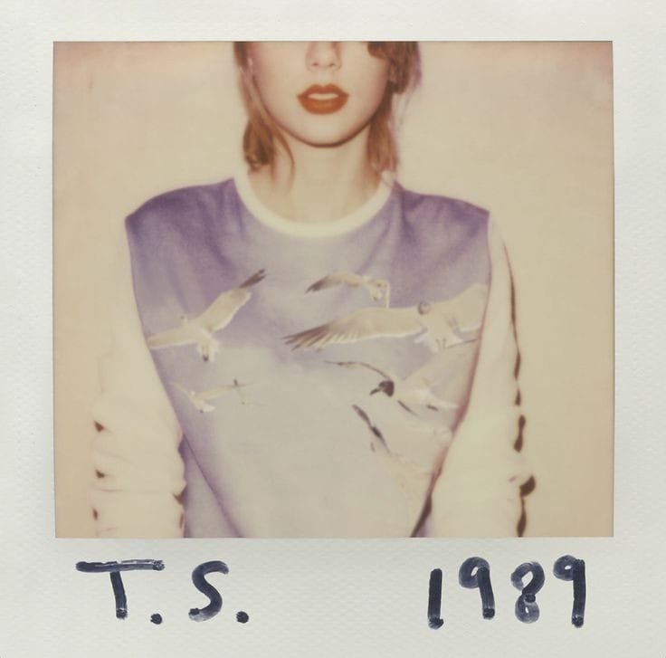

O álbum teve 7 singles, 3 deles tiveram o 1° lugar no Billboard Hot 100, sendo eles: um: "Shake It Off", "Blank Space" , e "Bad blood".
O álbum apareceu na Rolling Stone's em "500 Maiores Álbuns de Todos os Tempos". No Grammy 2016, 1989 ganhou Álbum do Ano e Melhor Álbum Vocal Pop.
Tornando Taylor a primeira artista solo feminina a ganhar o Álbum do Ano duas vezes.
Voltar